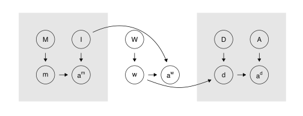

Skip to main content
Research Design: Declare, Diagnose, Redesign
Show table of contents
Table of contents
Introduction
1
Preamble
2
Improving research designs
3
Software primer
4
Part I Exercises
Declaration, Diagnosis, Redesign
5
Declaration
6
Specifying the model
7
Defining the inquiry
8
Crafting a data strategy
9
Choosing an answer strategy
10
Diagnosis
11
Redesign
12
Part II Exercises
Research Design Library
13
Research Design Library
14
Observational designs for descriptive inference
15
Experimental designs for descriptive inference
16
Observational designs for causal inference
17
Experimental designs for causal inference
18
Multi-study designs
19
Part III Exercises
Research Design Lifecycle
20
Research Design Lifecycle
21
Part IV Exercises
References
Research Design: Declaration, Diagnose, Redesign

Graeme Blair, Jasper Cooper, Alexander Coppock, and Macartan Humphreys
Draft manuscript under advance contract, Princeton University Press